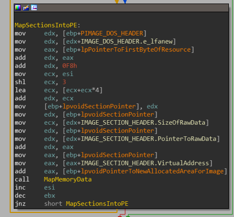
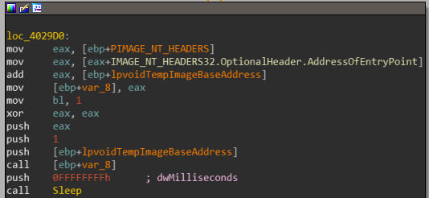

Analyzing Modern Malware Techniques
Fileless malware - Self Loading Technique
Fileless malware is nothing new, but is very much used today. The idea is to load a payload into memory and to leave as much as little evidence as possible on the hard drive of the computer. This can be achieve by various techniques such as:
- Using PowerShell to further infection in the machine.
- Using the Registry to save malicious payloads without dropping them on disk.
- Using WMI(Windows Management Instrumentation) to collect data about the computer.
These techniques go under a category called “Living Off the Land” which means the malware authors utilize Windows tools to exploit and manipulate them for malicious activities.
Today we’re gonna look at Kovter, a click-fraud malware, it’s file-less payload is a bit different from the techniques mentioned above. I will be looking at its unique way of loading its payload without dropping a single file on disk, I’ll be exploring a sample to show how it actually achieves this.
Recommended background required:
- Knowledge in C and WIN API
- Knowledge in x86 Assembly and basic usage of IDA PRO
- Basic understanding of the PE File format
Tools used for the article:
- IDA PRO 7.0
- x64dbg
- PEBear
- Resource Hacker
- VMWare Workstation 14.0
Samples used:
4160d0e5938b2ff29347476788f3810e
Setting up some goals:
I found this sample in a malwarebytes blog post, Where the author goes into a brief mentioning that the sample loads an encrypted PE file from the resource section. It maps the file inside its own memory and dynamically resolves it completely, without dropping it on disk. It is then mentioned that the mapped payload lives off the loader host, it depends on it and without it, it cannot work.
So we’re gonna be looking for:
- Resource section handling API(ResourceSize, ResourceLock, ResourceLoad).
- Any memory allocating API(HeapAlloc, VirtualAlloc).
- Reference to any PE File format structures.
- API Resolving API’s(LoadLibrary, GetProcAddress).
We know the payload is encrypted so we don’t want to dig in looking into how the file is decrypted, we want to find it decrypted.
Static Analysis:
I decided to first load the file in IDA and scan for strings or valuable imports:

This is incredible - we find everything we need off the spot. Calls to HeapAlloc, VirtualAlloc, LoadLibrary, GetProcAddress and resource related functions.
Let’s look at the entry point of the binary:
We’re presented with a long list of functions being called in a linear order… not really helpful.

Before I dissect the malware further I decide to look into the resource section using Resource Hacker:

A resource, it’s called DATA and its encrypted. So let’s be on the lookup for any reference to the string “DATA” in memory.
Back in IDA, it’s really hard to realize what’s going on if we go free diving in the binary. It’s better off to start at the bottom so first let’s explore the areas that are of value.
We’ll start off with the Resource API calls:
A call to FindResourceW is referenced at 00402B0E:

We can easily map out the local Variables var_8 and var_C and ESI, We know that by stdcall convention, the return value is passed into eax from each function.
FindResourceW returns a handle of type of HRSR(Handle to a resource information block) is passed inside esi.
SizeOfResource returns a DWORD which represents the size of the resource in bytes, this goes into var_C
LoadResource returns a handle of type HGLOBAL which represents a handle to the source, it is directly passed into LockResource
LoackResource returns a pointer to the first byte in the resource, this goes into var_8.
Let’s rename everything in IDA so we’ll have a more clear view of things:
Cool, now lets rename the function to something more valuable for us, so we can find it later(sub_00402AD0 -> LoadResourceFromMemory)
Next let’s look at VirtualAlloc, we’ll use the xrefs from the Import view in IDA to look up the VirtualAlloc API Call(can be found at 0x4029F0):

We can map var_34, which will point to the first byte of the allocated space, it is used a lot during the program so lets rename it right now to lpvoidPointerToAllocatedSpace
the instruction sequence:

is this an entry inside a structure or an array? I cannot tell for sure at this point.
If we scroll down, we can see LoadLibrary and GetProcAddress are being called in a loop fashion:


Let’s start from the top(code block 0x4029C2): If EDI is not empty, a DLLs base address will be resolved using LoadLibraryA. That address will be saved in EBX, which we can clearly see is being passed to GetProcAddress to get a base address of an API(code block 0x40299C). When resolved, it’s then saved inside [EDX].
then at location loc_4029AE two local variables are incremented by four which can be represented as an indexers inside an array of pointers.
At first glance, I instantly thought about one thing, the binary is attempting to resolve the Import Address Table of another binary. but it’s really too early to make such assumptions.
Lets give this function a name(sub_40274C -> ExecuteNewResolvedPEinResources)
Now let’s check who called ExecuteNewResolvedPEinResources, it’s sub_402C58. Hmm… Interesting this function also calls LoadResourceFromMemory.
The caller of this function(sub_402C58) is the start function which is the entry point of the program. In addition sub_402C58 is also the last function being called before the loader binary shuts itself down. Great! We know where to stop and what to look out for!

Dynamic Analysis:
Breakpoints to set before execution:
- LoadResourceFromMemory(00402CA5)
- ExecuteNewResolvedPEinResources(00402D7F)
- VirtualAlloc(00402807)
- LoadLibraryA(00402941)
- sub_402C58(00402C58)
Right so upon execution we should directly land at sub_402C58.
before entering LoadResourceFromMemory(0x402CA5), we can see “DATA” is being passed into EAX which is the name of the resource we saw before.
Then we can see that the pointer to the first byte in the loaded resource is being passed into var_8(ebp-8).

but as we exit the function, we lose all reference to it, we just know its located at 0x00407064(the resource is still encrypted.)
Looking at the code following that function, we just see a huge linear code block - calling various functions. We could go scanning these functions, but this might go into a rabbit hole I wish not enter. I’m working on the assumption that as soon as the file is going to be mapped into memory, it’s going to be mapped in its decrypted form. I decide to step over most of these calls.
And what do you know - if we continue skipping these functions we’ll start seeing the string MZP being shown in the debugger. first its referenced as “M8Z” and finally before entering ExecuteNewResolvedPEinResources (0x402D7E) We get a valid PE file header!

EDX contains a pointer to the decrypted file, EAX contains the path string to the location of the loader binary and ECX contains value 0x00066A00.
So let’s go into ExecuteNewResolvedPEinResources in IDA and see if we can map this data out(yes we can!)

If we keep on going, nothing really happens until we hit the code block at loc_4027BB:

var_38 passed by EBX is now a pointer to a newly allocated PE File, after calling the function(0x4027BE) in the block it returns that pointer into EAX.
If we do decide to enter that function(0x4027BE), it leads to a rabbit hole of more functions. I decided not to get into it(If we resolve the location of the calls to HeapAlloc, this function might eventually call it. I speculate that this function has something to do with either confusing the analyst or it attempts to map out different sections of the PE, either way it has not much value to us anyway).
EAX assigns this new pointer into var_10 and var_18 and then something interesting happens - the binary attempts to check if [EAX] contains the string “ZM”(0x5A4D). I input the data I collected inside IDA:

I decide to conclude that var_18 is actually a pointer to IMAGE_DOS_HEADER, well see if this assumption is correct.
At the next code block, the code loads the address of the IMAGE_DOS_HEADER and adds 0x3C to it and attempts to compare it to “EP”( 0x4550).

e_lfanew is the last field in the IMAGE_DOS_HEADER and contains a the offset of the IMAGE_NT_HEADERS structure in the file, “PE” is the the value of the first field located inside IMAGE_NT_HEADERS, Signature:

The next code block calls VirtualAlloc. I decide to map my assumptions into IDA:

SizeOfImage field located inside the OptionalHeader represents the size of the binary in bytes. EAX plus EAX will contain double that size. so its for two binaries.
At this point, there is too much evidence to conclude that the loader binary is loading and mapping out the file located in the resource section “DATA”.
The next code block contains the following instructions:

if we look through the entire block var_14 is almost always passed in EDX, and looking inside the function sub_4022B4 we can see that both EAX and EDX are being used. EAX when passed to this function will point past the entire size of the PE file. while EDX will contain random data. If we’ll dig even deeper inside sub_4022B4. we can see the data contained in EDX is being written on the boundary allocated previously for the second PE file! so let’s rename everything:

If we keep reversing this entire code block, the main conclusion is the code block is copying the first resource binary we found to lpvoidPointedToNewAllocatedAreaForImage+SizeOfImage+4. then at 0x0040287D, the resource binary is being copied again to lpvoidPointedToNewAllocatedAreaForImage.
These two binaries are separated by a boundary contained in the variable lpvoidDataToPopulate( contains the value 0x66A00)
We rename sub_4022B4 to MapMemoryData, and var_14 will be renamed to lpvoidDataToPopulate.
Re-mapped view of IDA:

Boundary value:

we move on to the code block located at 0x00402891:

This loop goes through all the sections located within the resource and maps them into the newly allocated memory.

This can be observed in the debugger if we access and view the dump of EAX before call to MapMemoryData and after the call. it should be noted that the sections are being mapped into the first memory area allocated for the PE from the resource sections and not the second.

At 0x4028EC, we can see that the ImageBase of the resource binary in memory is being changed, this field located in IMAGE_OPTIONAL_HEADER is usually set for 0x400000 for binaries but it’s being changed, to point to the memory pointed by the new allocated memory for the binary.

In the next block it gets really interesting(0x4029B6):
A loop begins to resolve the IAT, of the second area allocated for the binary mapped into memory. I will not bother explaining this in depth but this entire thing occurs in this loop which is described in this diagram:


And now finally, after iterating resolving the IAT we jump into loc_4029D0.

The address of the entry point of the binary is passed into var_8, and then it is called. the two loaded binaries depending on each other to execute, one is going to execute its code and the other contains resolved IAT addresses.
Lets create a diagram detailing how this loader operates so it would be more clear what just happened and it would also be easier for us to understand the loading of payload.

Conclusion:
In this article, I demonstrated how a malware might hide itself in memory by loading its encrypted payload into itself, thus attempting to stay undetectable and to avoid dropping files on disk.
In the next part of this series we’ll be exploring how malware might use PowerShell and the Registry to execute a File-less attack.
Resources used:
PE File Format
Untangling Kovter’s persistence methods


{kind=link}
{kind=link}